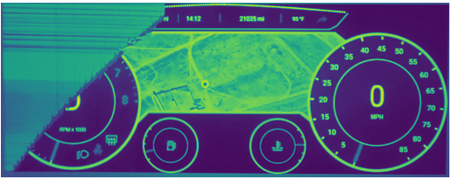
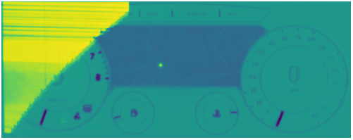
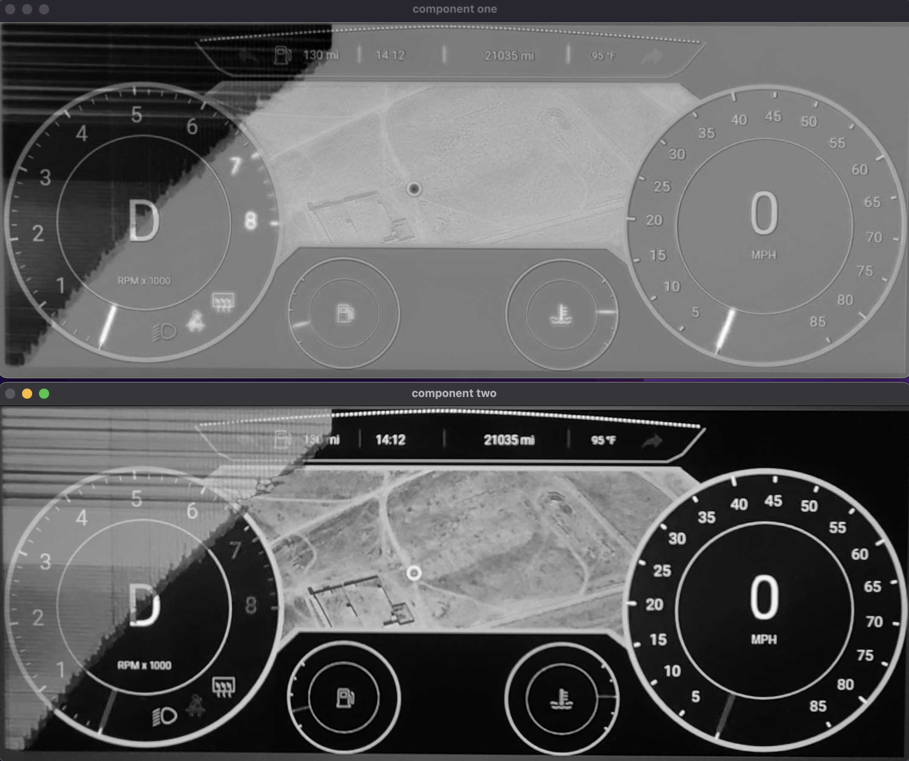
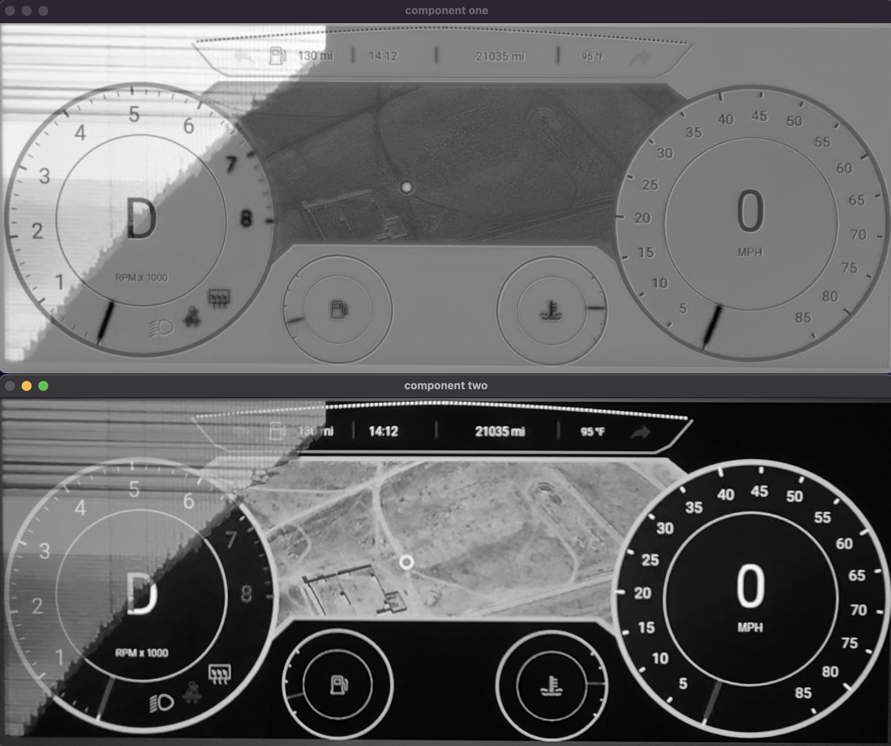
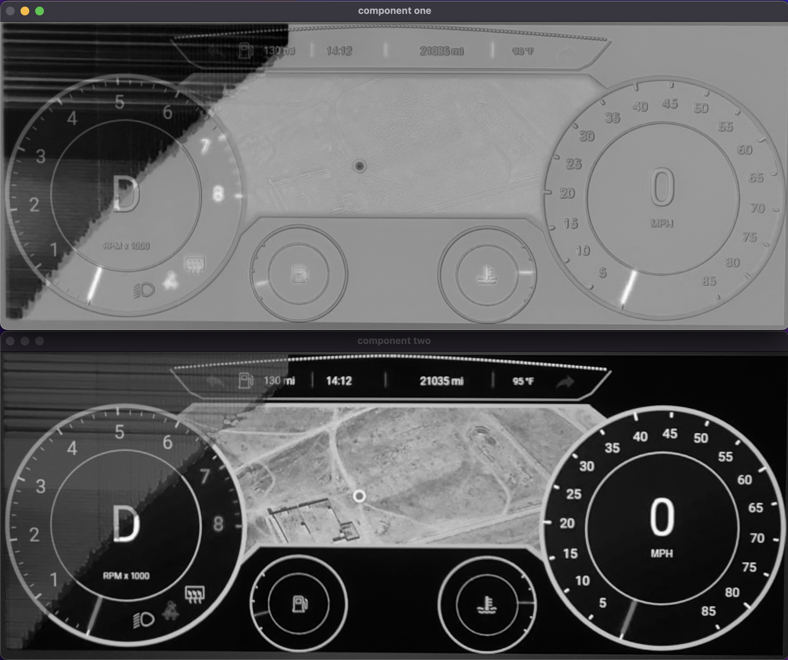

ICA was done using fastICA on just a lone picture of an obstructed dashboard.
The image used:

First Independent Component:
second independent component:
Bottom of the line, it looks really promising. What was done above is just with a single image. I need to try again but I include the expected as input.
The image above is a composite of a screenshot of the expected output, and picture of the obstructed visualization. (it is a mean composite)
This is ICA done on the screeshot mixed with the image. The difference is that it has been rescaled for 0 to 255. It seems to more clearly show what is going on that the images that are scaled for matplotlib in green/yellow.
I think there is some randomness in ICA. I ran the same code as the above image multiple times to generate this sampling of output.
Just based on these, it can be seen how there is some randomness, i.e. they are not all the same, but there is consistency in the highlighting of the obstructed region.
NOTE: the above are done using the 'parallel' algorithm for fastICA. Will proceed to do some tests with the 'deflation' algorithm. Based on what I have been reading, parallel is faster, deflation is slower. The tradeoff being that deflation will be more accurate in general, and will be more accurate given the initial assumptions required for ICA might not hold very well.
Like before, these are all examples generated from the same original two mixed signals. The only reason they are different is because of the rng in the ica algorithm.
